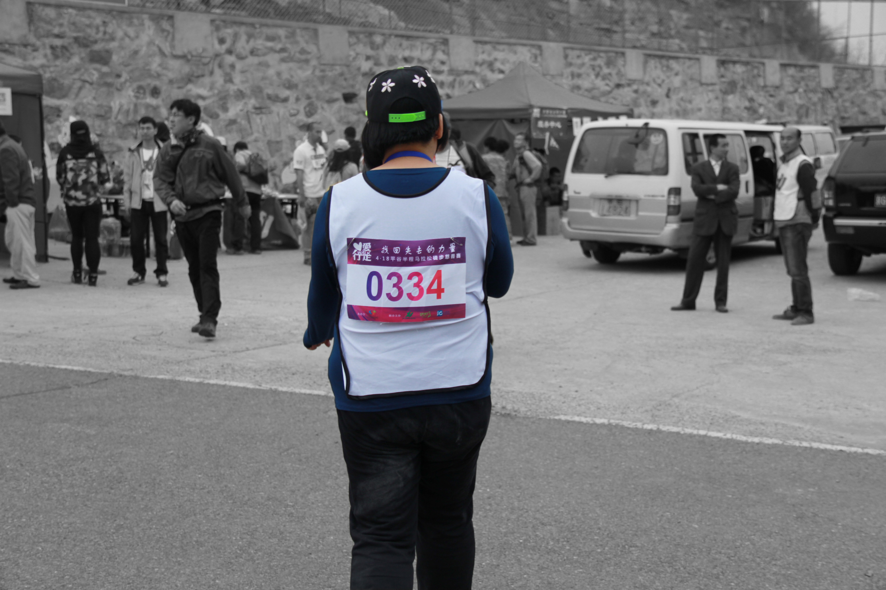
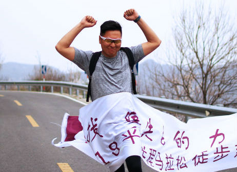
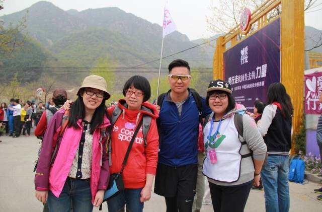
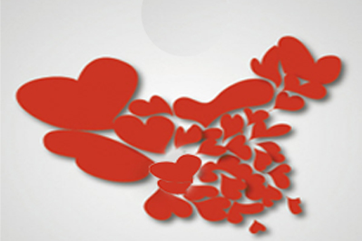
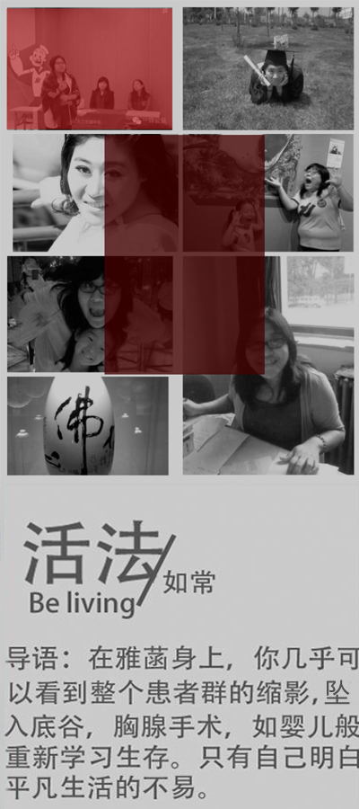
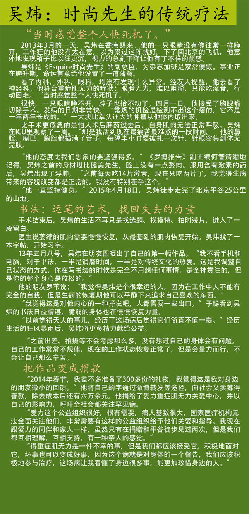
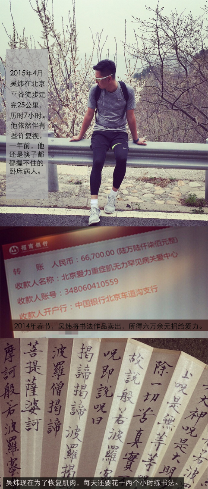
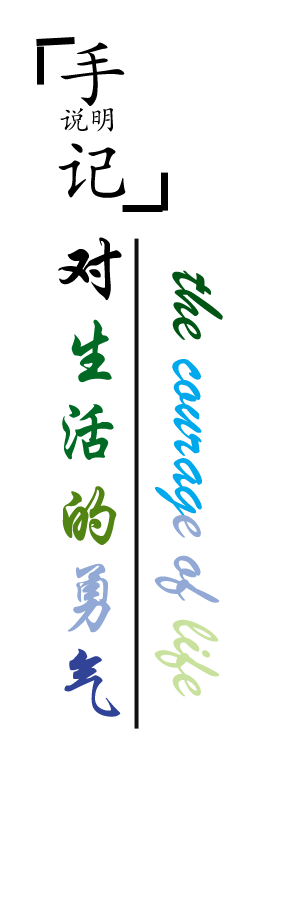

活法-雅菡
“去和你的身体和平相处。”这是雅菡的领悟，“生活中有两类情绪容易得重症肌无力，一是好胜心强，二是郁郁寡欢。”

生死场-吴炜
“常规的机检是检测不出胸腺瘤的，它不是一年两年长成的。”吴炜，《时尚先生》副总监。最难过的一段时间，他每半小时扎一次针，针眼密集到体无完肤。

他们-行走
他们都患了这种罕见病，但还不至于是绝症。它是可以被打败的，他们四个人，都从无法抬起眼皮，努力到可以徒步走山路25公里。

手记-关注
非营利NGO，限制了爱力的筹资渠道。通过“自造血”，爱力筹到了足够的资金，但他们的活动，并不以筹款为目的，他们需要更多的目光、更多的关怀。
雅菡：一个重症肌无力患者的复活
病从无中来
2011年十一月，刚刚大学毕业的雅菡突然发现自己掉进了命运的深渊。一到晚上就开始说不出来话，吐字不清。她无法进食，刚刚艰难吞咽下去的流食会从鼻孔出来。她呼吸困难，脾气特别暴躁，自己控制不了。眼睛也发生了严重的复视。 她还发现自己的容貌改变了，眼皮下垂，用尽全力业难以挤出一个笑容——回顾当时的毕业照，天生大大咧咧的她居然没有一张微笑的照片。一次家庭聚会吃火锅，她直接吐了一桌子然后就去医院检查，医生送了我几个字疑似MG。她意识到，自己已被病痛的魔爪钳住了。
重症肌无力。几乎所有人都对这个病一知半解。朝气蓬勃的事业和生活就这样步入了乱序。
重症肌无力。几乎所有人都对这个病一知半解。朝气蓬勃的事业和生活就这样步入了乱序。
治病迢迢路
从哈尔滨的大学毕业后，雅菡创立了一家家庭教育工作室。忙而充实的生活这因为这种怪病画上了休止符。她回到父母身边，因为她重新变成了一个失去自理能力的孩子。因为抬不起胳膊，她穿不了衣服，拿不动碗筷，甚至有时候连抬一下眼皮也很困难。
雅菡接受了胸腺切除手术，推进手术室前，她立了一份“遗嘱”。她告诉哥们自己家里的一些状况，爸妈的生日，他们的爱好，每人负责一摊。如果她没有出来，请朋友们照顾她的爸妈。
全家人瞒着姥姥姥爷在医院陪她。直到今天他们也不知道雅菡生病了。亲人就是不愿让他们落泪，于是只能把难过一个人吞咽。雅菡的心里弥漫着大片的无助和迷茫，她不知该如何诉说，然后，她找到了爱力重症肌无力关爱中心。
雅菡接受了胸腺切除手术，推进手术室前，她立了一份“遗嘱”。她告诉哥们自己家里的一些状况，爸妈的生日，他们的爱好，每人负责一摊。如果她没有出来，请朋友们照顾她的爸妈。
全家人瞒着姥姥姥爷在医院陪她。直到今天他们也不知道雅菡生病了。亲人就是不愿让他们落泪，于是只能把难过一个人吞咽。雅菡的心里弥漫着大片的无助和迷茫，她不知该如何诉说，然后，她找到了爱力重症肌无力关爱中心。
病友的默契
病友之间总是有一种神奇的默契。因为懂得，所以慈悲。发起人海连大哥积极组织患者间的交流互助，病友之间传播着什么药适合类似症状，哪一家医院疗程好。原本深居简出的他们自发组织起了活动，无论是一起聊聊天，还是外出呼吸新鲜空气，彼此的扶持能给他们注入希望的力量。 雅菡从大学开始就热心公益活动，得病后她从网上得知这个组织，就成为了爱力中活跃的志愿者。
重症肌无力落到谁身上都是偶然的，但是雅菡认为偶然之中有其必然性。她以经验总结了两类高发群体，一是郁郁寡欢，对自己常常又不认同感的人。而是好胜心强，事事都想争输赢的人。一场疾病会颠覆人的价值观。
别做工作狂
一年多以来，她已经学会了和重症肌无力和平相处，去感受身体带给自己的信号。她还晒过自己爬雪山的照片，“哪一天会突然发病也说不定。”重症肌无力落到谁身上都是偶然的，但是雅菡认为偶然之中有其必然性。她以经验总结了两类高发群体，一是郁郁寡欢，对自己常常又不认同感的人。而是好胜心强，事事都想争输赢的人。一场疾病会颠覆人的价值观。
“去和你的身体和平相处。”这是她的领悟。年轻的我们总是不以为然，熬夜，加班，奔波，正如雅菡所说，“不善待自己怎能善待他人，不爱惜自己的人没有大爱。”



走近爱力：我得了这个病，或许能让别人少得一个
中国至少有65万重症肌无力
十多年前，王朔《过把瘾就死》男主人公得了重症肌无力，这个病第一次受到广泛关注。2014年，首个关爱重症肌无力的纪念日诞生了，知道这种罕见病的人依然罕见，但是正式的NGO组织已经建立起来。就像接力赛时接力棒无法传到另一位队员身上一样，重症肌无力是神经-肌肉接头处传导发生障碍，随着病情恶化，肌无力症不断扩散，可能引发呼吸肌麻痹，甚至呼吸衰竭。
根据《中国神经免疫学和神经病学》杂志2011年9月“中国重症肌无力诊断和治疗专家共识”的数据，中国至少有65万以上这样的病人，其中女性发病者为7.14/百万人，男性7.66/百万人。
爱力于2014年发放重症肌无力患者生存状况调查问卷，回收的数据显示，消极情绪在患者中蔓延。
由于他们看起来和常人无异，博得社会的眼球和同情似乎更难。媒体偏向有视觉冲击的疾病。他们的生活质量比常人艰难得多——458名全国的患者中，31.23%失业，50%被医院误诊耽误治疗，48%无力负担两万元左右的治疗费用，60%的人没有社会保险。
因而，他们呼吁社会的关注。
仅仅依靠消费志愿者的热情是不够的
爱力的理事长张海连呼吁推动重症肌无力相关的医疗研究，完善惠及重症肌无力的医疗保障制度，并通过各种渠道实现重症肌无力患者的就业。爱力关爱中心2012年发起，2013年2月注册，已经走过两三年，一直缺钱。所以，至今也就救助了危象对象17人，小额资助35人，发放患者康复手册9010册。
仅仅依靠消费志愿者对公益的热情是不够的，许多切合实际的想法迫在眉睫。
所以，爱力发起“自造血”共融活动，让病友走出去和社会融合，让普通人参与他们发起的户外活动。
4月18日平谷半程马拉松徒步行走中，四百多位北京市民体验了跟患者一起行走在山野。他们中不乏许多对重症肌无力一无所知的驴友，张海连和他的同伴们给每个人发爱力水手的册子。
“我含着一口水，怎么也没法让我妈妈听懂我在说什么。”一位小女孩和妈妈参与了“你说我猜”的游戏，模仿重症肌无力患者吐字不清的困境。
乐观是被逼出来的，活着就是最大的尊严
爱力发起人清昭因患病讲话比较含糊，总是使劲吐字力求大家听清。“活着真好，活着就是最大的尊严。”因为重生过，爱力的患者在徒步马拉松中体现出了比普通人更大的耐力。同行的记者原本跟随他们拍摄一路，却实在因为山路太累人而放弃了。“你们继续加油，我们去终点等着你们。”说罢，记者们收起相机坐上车。
黄蕾就是走完25公里的患者中的一个。她6岁时病情恶化，全身抽搐，曾经停止过呼吸4小时。现在是母亲了，一开始，她没有力气抬起胳膊抱孩子，但是一点一滴的肌肉恢复，让她行走的距离一次次拉长。
她向我们展示了自己做的肉脯、豆干，还有用梨发酵了六个月的酵素。“你们没带干粮，饿了路上告诉我啊。”
很多人都记得她说的另一番话：“20万个人才有一个让我摊着了，我得了这个病，或许能让别人少得一个。”
和爱力的人们呆在一起一个多月，我最常听到的一句话是：“我们需要媒体关注，但我们和你们是一样的人，不是弱势群体。”
他们对外界分享者曾经的痛苦，却又敏感地捍卫着自己的尊严。他们有底气说自己不是弱者，每个人都有一段在死亡线上挣扎的日子。生死二字，我们谈来，都太轻飘。
在地狱徘徊过，对人间会格外珍惜。我们走几里山路就累，他们一声不吭走到了25公里的终点。我们劳心劳力，不在乎身体响起的各种警报；他们却在自己贫瘠不堪的身体上，硬是浇灌出了复苏的花朵。
正是这颗隐藏在他们心中的小宇宙，让他们有执念把爱力办下去。爱力很强大，它三年来直接救助了2200多位患者。爱力也很弱小，它的生命还维系在这个社会的善意之上。运转资本，社会关怀，福利制度......困难让一部分人倔强地走下去，也让他们反思着，是否能一直消耗志愿者的热情？
爱与责任让我们坚持下去

他们试图传达给所有人，不快乐的根源不是人而是心态。
在他们组织的各种北京周边徒步走时，所有人都比他们健康，但是他们不比任何人脆弱。尤其是自己想要全程拍摄徒步者的镜头时，他们匀速绕着山路就过了十多公里，而我犹如惯着铅的双腿，想把相机也扔了。
最后坐着专车到终点看着他们一个个冲刺，无法联想到他们很多人，都曾是一两年前握不动筷子的人。再用怜悯的镜头去记录他们就太矫情了。
他们和我们一样平等，只是上帝给予他们的考验更艰苦，他们的煎熬更光荣。
重症肌无力是罕见病的一种，去年冰桶挑战让渐冻人症广为知晓，爱力的理事长张海连，心里也想“搞个大新闻”。
爱力的钱都支援给病友，宣传上靠不遗余力地发起公益活动。
对于公益我总有一个致命的弱点，爱赞美胜过爱真实的成就。不过爱力不适合这句话。
爱力虽然小而缺钱，但他们不缺乏伸出关爱之手的志愿者。意见领袖的热情会传染给每一个曾经的志愿者，让他们自愿维护着一种我为人人的情怀。当清昭每次都耐心回复病友和媒体的询问，海连大哥为了策划徒步走忙活到两年多时，我对这些不再年轻的人致以敬意，多少人走到中年理想都丧失了体温，而他们还在为少数人的权益奋斗着。
做公益不是为了获得道德优越感，不是为了获得关注或同情。做公益，要为一群不愿上镜头的病人奔走呼号，要把没有收入的NGO自己造血造福病友。但是无私仍然是我们能够为自己做的，最棒的事。
最后坐着专车到终点看着他们一个个冲刺，无法联想到他们很多人，都曾是一两年前握不动筷子的人。再用怜悯的镜头去记录他们就太矫情了。
他们和我们一样平等，只是上帝给予他们的考验更艰苦，他们的煎熬更光荣。
重症肌无力是罕见病的一种，去年冰桶挑战让渐冻人症广为知晓，爱力的理事长张海连，心里也想“搞个大新闻”。
爱力的钱都支援给病友，宣传上靠不遗余力地发起公益活动。
对于公益我总有一个致命的弱点，爱赞美胜过爱真实的成就。不过爱力不适合这句话。
爱力虽然小而缺钱，但他们不缺乏伸出关爱之手的志愿者。意见领袖的热情会传染给每一个曾经的志愿者，让他们自愿维护着一种我为人人的情怀。当清昭每次都耐心回复病友和媒体的询问，海连大哥为了策划徒步走忙活到两年多时，我对这些不再年轻的人致以敬意，多少人走到中年理想都丧失了体温，而他们还在为少数人的权益奋斗着。
做公益不是为了获得道德优越感，不是为了获得关注或同情。做公益，要为一群不愿上镜头的病人奔走呼号，要把没有收入的NGO自己造血造福病友。但是无私仍然是我们能够为自己做的，最棒的事。

重症肌无力(Myasthenia gravis，MG)是一种肌肉丧失收缩功能的自身免疫性疾病，发病率约为1/12500。
重症肌无力的发病多在于胸腺的异变，切除胸腺可有效治疗，治愈率约为20-30%，治愈费用市三甲医院标准为8000-20000元。
重症肌无力表现为眼睑下垂、饮水咳呛、表情僵硬、四肢无力，危及生命。中国约有65万重症肌无力患者。
重症肌无力分为遗传性和非遗传性，在非遗传性中，多发群体为20～30岁女性、50～60岁男性。
为维持身体状态，重症肌无力病人每天都要吃溴吡斯的明片，早上7点，中午11点，下午5点，晚上10点。
6月15日是国际罕见病关爱日，2013年12月北京成立爱力关爱中心，为全国病友搭建了一个温暖的家。